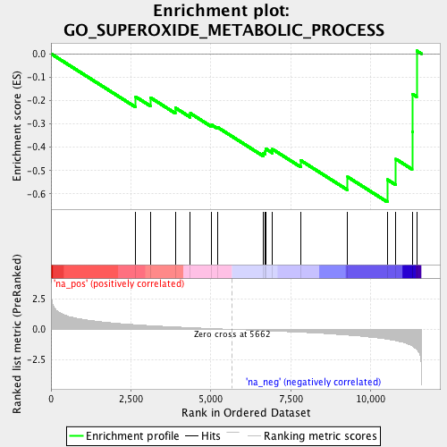
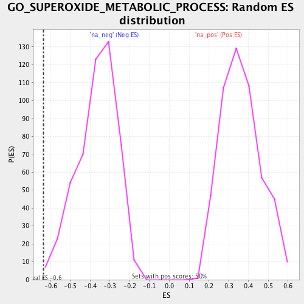

| | | Dataset | RG_PDR_nPDR |
| Phenotype | NoPhenotypeAvailable |
| Upregulated in class | na_neg |
| GeneSet | GO_SUPEROXIDE_METABOLIC_PROCESS |
| Enrichment Score (ES) | -0.63467824 |
| Normalized Enrichment Score (NES) | -1.7367668 |
| Nominal p-value | 0.006048387 |
| FDR q-value | 0.27767706 |
| FWER p-Value | 0.998 |
Table: GSEA Results Summary

Fig 1: Enrichment plot: GO_SUPEROXIDE_METABOLIC_PROCESS
Profile of the Running ES Score & Positions of GeneSet Members on the Rank Ordered List
| PROBE | GENE SYMBOL | GENE_TITLE | RANK IN GENE LIST | RANK METRIC SCORE | RUNNING ES | CORE ENRICHMENT | | 1 | SOD1 | | | 2645 | 0.375 | -0.1840 | No |
| 2 | SH3PXD2A | | | 3107 | 0.304 | -0.1876 | No |
| 3 | PRDX2 | | | 3886 | 0.197 | -0.2314 | No |
| 4 | CYB5R4 | | | 4357 | 0.142 | -0.2551 | No |
| 5 | EDN1 | | | 5026 | 0.067 | -0.3049 | No |
| 6 | NQO1 | | | 5206 | 0.048 | -0.3147 | No |
| 7 | NCF2 | | | 6641 | -0.102 | -0.4265 | No |
| 8 | NOXO1 | | | 6701 | -0.108 | -0.4187 | No |
| 9 | NCF1 | | | 6706 | -0.109 | -0.4060 | No |
| 10 | ATP7A | | | 6925 | -0.136 | -0.4087 | No |
| 11 | PRDX1 | | | 7808 | -0.238 | -0.4567 | No |
| 12 | CYBB | | | 9274 | -0.470 | -0.5273 | No |
| 13 | CCS | | | 10517 | -0.804 | -0.5387 | Yes |
| 14 | CYBA | | | 10784 | -0.928 | -0.4509 | Yes |
| 15 | SOD2 | | | 11292 | -1.342 | -0.3346 | Yes |
| 16 | PREX1 | | | 11307 | -1.364 | -0.1729 | Yes |
| 17 | IMMP2L | | | 11433 | -1.644 | 0.0125 | Yes |
Table: GSEA details [plain text format]

Fig 2: GO_SUPEROXIDE_METABOLIC_PROCESS: Random ES distribution
Gene set null distribution of ES for GO_SUPEROXIDE_METABOLIC_PROCESS